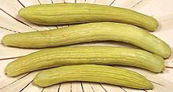

These melons, along with the closely related Chate Melons were popular in Ancient Egypt thousands of years ago, and are featured in many toumb paintings. They traveled from there into the Levant - or vice versa. Many researchers hold melons to have originated in Western Asia, but others think they originated in Africa.
Market size for these melons varies widely, from 6 inches long and 1-1/4 inches diameter to 21 inches long and 2-1/2 inches diameter but they can grow to a yard long and over 3 inches in diameter. When raw, they are very much like cucumbers in structure and taste. The skin is very thin and tender and is almost never peeled. Smaller sizes are often pickled and the resulting pickles have a rather different flavor from cucumber pickles.
Armenian cucumbers are seasonally available fresh in Southern California (May to July) and are grown as a garden vegetable in Florida and other suitable regions, but I understand they're almost impossible to find fresh in Armenia. Pickled they can be found in any market serving a Western Asian or Near Eastern community. They're usually packed in Lebanon or surrounding regions and labeled "Mikti" or "Wild Cucumber". The front photo specimen was 12 inches long (uncut), 2 inches diameter and weighed 14-5/8 ounces. The middle one was 14-1/2 inches long (if straight) 1-3/4 inches diameter and weighed 10-1/8 ounces.
More on Melons.
These melons are often used raw in salads as cucumbers would be used. The skin is extremely thin and is almost never peeled.

Melons chosen for pickles are generally around 6-1/2 inches long by 3/4 inch
in diameter, as are the photo specimens from Lebanon. Some brands choose
slightly larger melons and cut off the tips to fit the jar. The flavor is
sharp and more minerally than cucumber pickles.